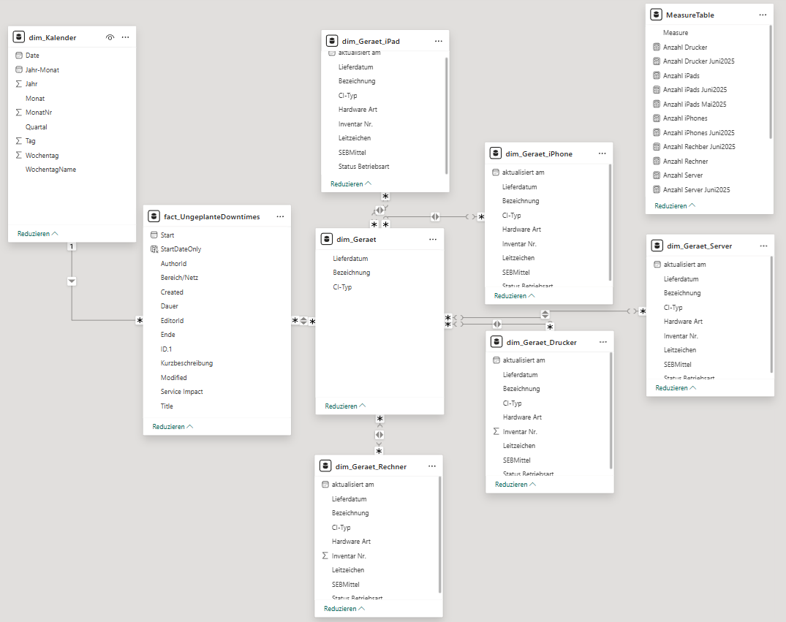

Measurement & Reporting nach ITIL® 4 Framework

ITIL® Monitoring mit Continual Improvement
Das Dashboard zeigt Reifegrade verschiedener ITIL® 4 Practices. Über KPI-Ampeln (Rot/Gelb/Grün) und
die Priorisierung nach Phasen (Service Transition, Service Design, Service Operation usw.) lassen sich
kritische Handlungsfelder und Optimierungspotenziale faktenbasiert identifizieren.

Kapazitäts-Dashboard
Transparente Darstellung der Kapazitäten einer IT-Abteilung mit Power BI: Teamverteilung, Aufgabenstatus
sowie Kapazitätstage/-stunden pro Story. Liefert Überblick über Auslastung, Fortschritt und Planungssicherheit –
die Basis für steuerbare Ressourcenplanung im ITSM.

KPI-Design, Reporting & ITSM-Controlling
Power-BI-Dashboard zur Visualisierung zentraler ITSM-Kennzahlen nach ITIL® 4. Kombiniert KPI-Ampeln,
Prozesskennzahlen (z. B. Tickets, Anrufe, Durchlaufzeiten) und eine Service-Performance-Analyse –
für eine auf einen Blick erfassbare Lage und faktenbasierte Entscheidungen.
Datenmodell

Steuerung & Reporting von ITSM-Daten im Power-BI-Datenmodell
Verknüpft Incidents, Changes, Assets & SLAs über eine zentrale Datumstabelle und bildet die Basis
für belastbare KPIs und Dashboards.
Einige von mir geprompte KI-Agenten